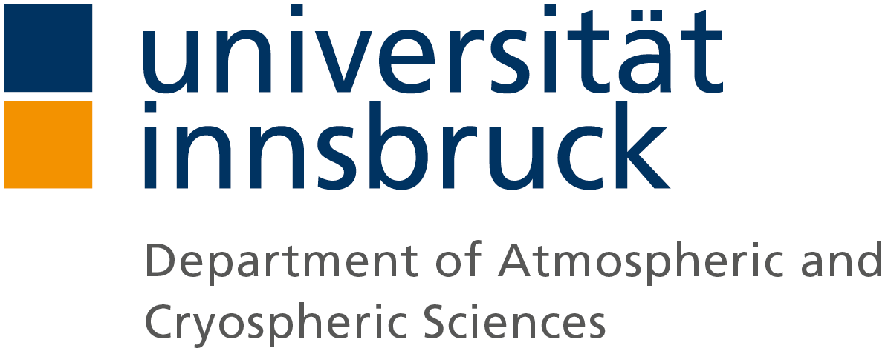
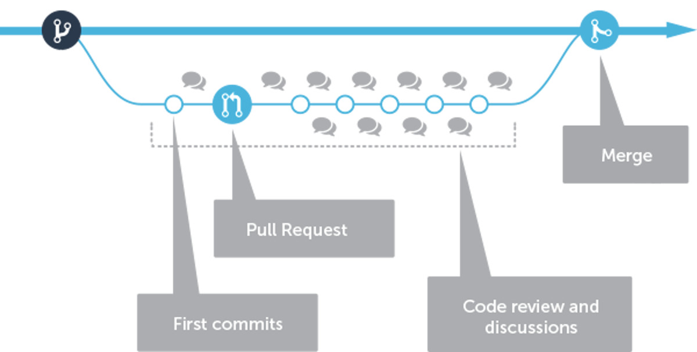
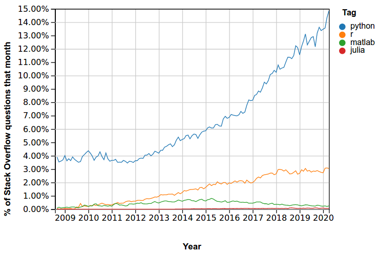
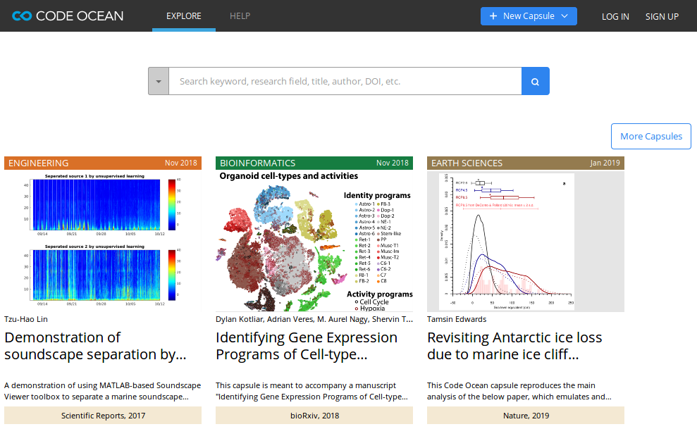
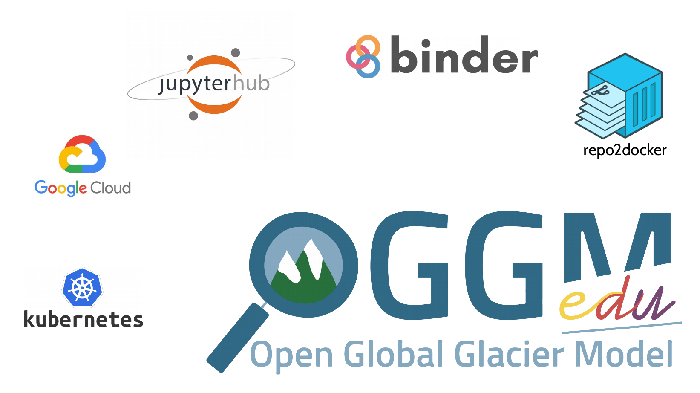

What open-source can do for you
and what you can do for open-source
An incentive for better software development practices in the research community  ÖGSL Semmelnar, 05.05.2020Fabien Maussion
Department of Atmospheric and Cryospheric Sciences (ACINN)
University of Innsbruck
Take home points
What can open-source do for you?
Open-source isn't only "free": it is a programming culture
conveying the concepts of code readability, documentation,
reproducibility, and open review.
These concepts can (and should) be applied
to the scientific practice (Open Science).
Embracing this culture and getting involved in the community
(even with small contributions!) will offer you
much more than simple "tools":
you will learn from this
experience and develop ideas for your own work.
Take home points
What can you do for open-source?
The responsibility for the development and maintenance of today's major scientific tools changed hands, from private companies to volunteers and academics. Funding agencies and universities are saving money, and this money should be redistributed to the open-source community (directly or indirectly).
Open science takes time! Scientific papers should be evaluated according to new standards: transparency and reproducibility of the analysis chain, availability of data and code and its documentation.
Open source takes time! The work of open source developers should be acknowledged and should become an asset for academic jobs, not a handicap.
Today's non goals
- licensing flame war: "copyleft" vs "permissive"
- open-source as mantra:
it's still OK to use Windows/Adobe/YourFavoriteTool and practice open-science
Science relies on
- peer review
- skepticism
- transparency
- attribution
- accountability
- collaboration
- impact
Since always, academic science has been perfecting these tenents.
Open source software is now excellent (superior?) at all of them.
A common misconception
Open source = free (as in "free beer")
Free ∈ Open source
Important elements of an open-source project:
- License (copyleft or permissive)
- Documentation
- Contributing rules
- Tests
- Peer review
- Community governance (rules depend on the project)
Collaborative development workflow

Example
New feature in the Astropy package
A common misconception
“Open-source software is not-reliable / untested / not-working properly.”
Well, it depends:
OS development is self-regulating,
and it works best if people actually use the system and report issues.
Bug fixes, with...
... a proprietary software:- User fills a ticket
- If lucky, after a certain time the user gets notified that the bug was fixed
- The fix is available in the upcoming version of the software
(sometimes at the price of a new license)
... an open-source software:
- User fills a ticket
- Maintainers and user discuss the cause of the bug
- If lucky, someone volunteers to fix the bug
- A fix is proposed to the code base, discussed, and eventually merged
- How large is the user base?
- Are the maintainers responsive?
- Are there bug reports? (the more, the better!)
- Where are the tests, do they cover the functionality I'm using?
- Continuous integration?
- (Is there an institution supporting the software?)
Testing and continuous integration
(is it getting boring already? We'll only do a short introduction ;)
I'll throw some affirmations in the "room"
- “coding” is a menial task, not worthy of the attention of a distinguished scientist
- I can write error-free code in one shot
- Scientists do test their code...
- ... but often not in a formal/reproducible way
- A script that worked once will always work.
A glimpse in software testing techniques
{kind=link}
A common misconception
“If I share my data or code,
people will steal my results and I will be left with nothing.”
Publishing First
- Good: share code/data once all papers have been published
- Better: share code/data as soon as there is a pre-print
- Best: share, with a license, while working, if not sooner
Data and the cake

Success stories
Software carpentryProject Jupyter
and its contribution to the Nobel Prize in Physics
xarray
And many more...
Growth of popular data-science languages
Reproducible science
A new business model
the open source model
Cloud computing and big data
- CMIP3 (40 TB), CMIP5 (2 PB), CMIP6 (~10 PB) (source)
- Earth Observation data
The future of computing?
Bring your code to the data, not the other way around.Sustainability crisis?
- Number of users increases, what about the number of maintainers?
- User claim for stable, reliable, and cross-platform software impedes innovation (e.g. Py2 VS Py3 conundrum)
- Did you know that NumPy wasn't really funded? (this changed recently)
- Did you know that most OS packages can be cited in scientific publications?
See e.g. initatives like

There is a train to catch, and it is time that (EU) universities and funding agencies realize it, so that we don't miss it.
Thank you!

by Fabien Maussion is licensed under a Creative Commons Attribution 4.0 International License.
- Did you notice that most pictures are also links in the presentation?
- The Astropy Problem
- Why Is NumPy Only Now Getting Funded?
- "Pangeo: An Open Source Big Data Climate Science Platform" (NSF award 1740648)